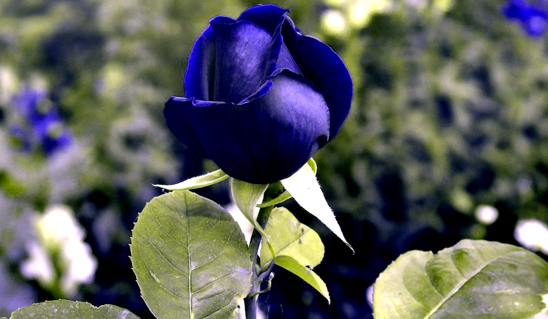

Neste exercício aprenderemos a aplicar ajustes e filtros predefinidos sem a necessidade de selecionar partes da imagem. Para isso utilizaremos a imagem salva na pasta de imagens do curso com o nome Rose.png.
Veja abaixo como será o resultado final:
1. Clique em Filtros → Melhorar → Remoção de olhos vermelhos.
2. Aumente o valor do Limiar para o máximo e clique em OK.
3. Com isso removemos de maneira prática todo o vermelho da imagem dando uma aparência de antiguidade e um efeito especial na rosa.
4. Agora vamos melhorar a aparência da imagem. Clique em Filtros → Melhorar → Passa-Altos.
5. Altere o Desvio Padrão para 100 e o Contraste para o máximo.
6. Ficou bacana, não? Agora exporte a imagem para sua pasta.